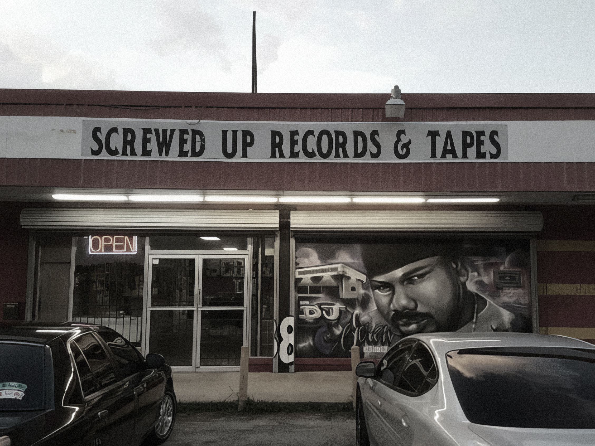

Роберт Эрл Дэвис-младший родился в Смитвилле, штат Техас.
В молодости DJ Винт мечтал стать водителем грузовика, как его отец, но просмотр хита 1984 года
брейк-данс "Breakin" и открытие проигрывателя его матери привлекли внимание его к музыке.
Его восхищение классической музыкой заставило его возобновить уроки игры на фортепиано. После
семи лет практики он смог на слух играть такие произведения, как Этюд Шопена до мажор. Его
музыкальный интерес изменился, когда он взял B.B. Кинг и Джонни Тейлор записывают и царапают их
на проигрывателе, как это делали ди-джеи, замедляя вращающийся диск, а затем позволяя ему
увеличивать скорость, играя со звуком.
Кузен Роберта Дэвиса Big Bub рассказывает: "Однажды мы с
ним слушали альбом Mantronix, и
тут черт его дернул вставить полуразряженные батарейки. Запись растянулась, и ему жутко
понравилось. Он долго потом работал над их пластинкой и примерно через год сделал весь альбом
полностью замедленным".
Уже в 1991 DJ Screw небезуспешно попытался популяризовать стиль у себя в южном Хьюстоне,
продавая самопальные screwed-сборники. Номер прошел, а вместе с ним пошло и дело: рэперам по
соседству заторможенные кассеты пришлись по вкусу. К 1992 году это переросло в локальную моду.

В начале 1990-х годов в Хьюстоне начал набирать популярность новый тип музыки под общим названием
«Chopped and Screwed», пионером которого выступил DJ Screw. Звук был создан с помощью техники
проигрывателя, в которой Screw замедлял темп и добавлял отрывки из хип-хоп гимнов, придавая им новый
гипнотический и завораживающий звук, который, по его мнению, также облегчал понимание текста.
В 1991
году он начал выпускать кассеты, известные как "Screw Tapes", на которых он замедлял и манипулировал
записями популярных исполнителей, а также заметно включал фристайл группы друзей и местных рэперов,
которые стали известны как Screwed Up.
В 1994 году Винт переехал в дом в восточном парке Южного парка, который вскоре стал известен как «Дом
Винт», где он мог вести свой новый бизнес по продаже кассет и записи фристайлов вместе с группой. Эти
кассеты быстро завоевали популярность в этом районе, позволив многим участникам группы начать успешную
сольную карьеру.
В какой-то момент бизнес стал невыносимым для дома, поэтому группа перенесла свою
деятельность в магазин в Миссури-Сити, который стал известен как «Screwed Up Records & Tapes».
